A photo show a memory but also holds a story behind itPictures
This website is the first one I have made. This is something new for me; I'm eager to learn and practice. The topic of this website will be photos: some I have taken on my phone and others online. The point is to show that every photo has a story to tell, and every story has a memory. The photo doesn't have to be obvious. The photo could be anything; what counts is the memory and story behind the photo.
Photos hold memories, but the images themselves can be used to create something else. I like to take pictures, but I also like to mix in Photoshop. I like to think of it as another form of scrapbooking. Taking different pictures, rearranging them, and gluing them together to make something new. I don't think this would change the importance of the photos, but I think it's an opportunity to see what different photos can show when merged together. A photo can be anything, but more photos mean more possibilities.
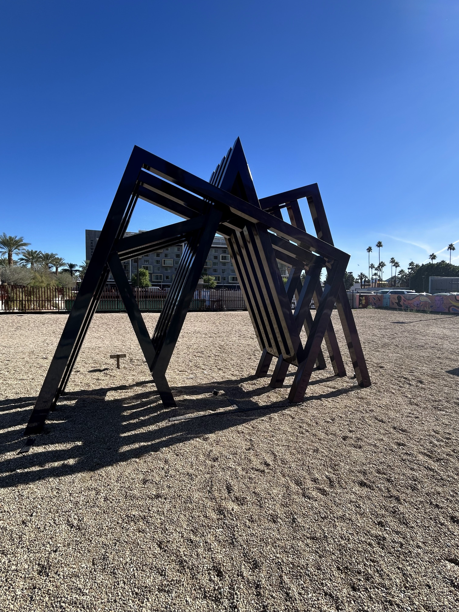
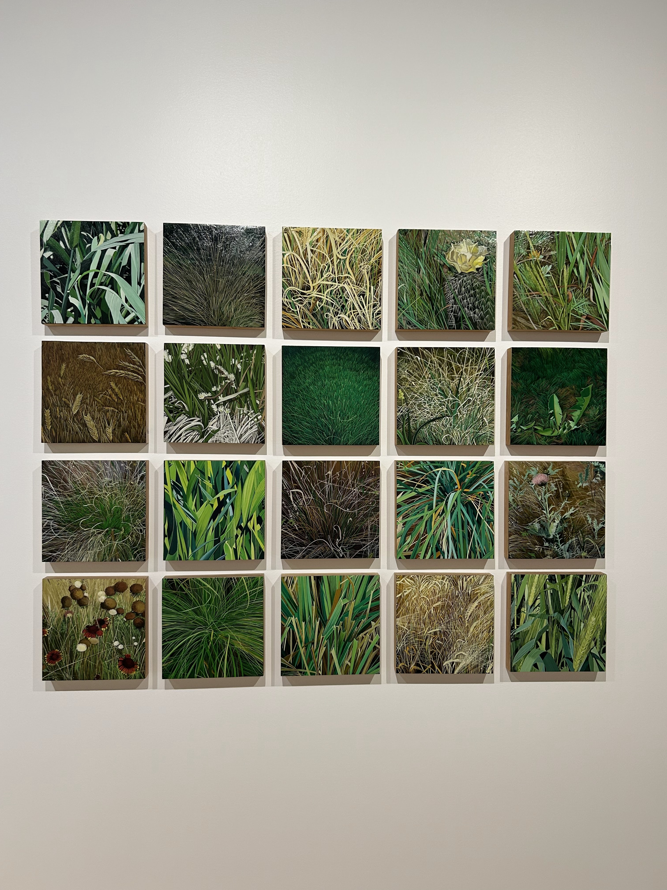
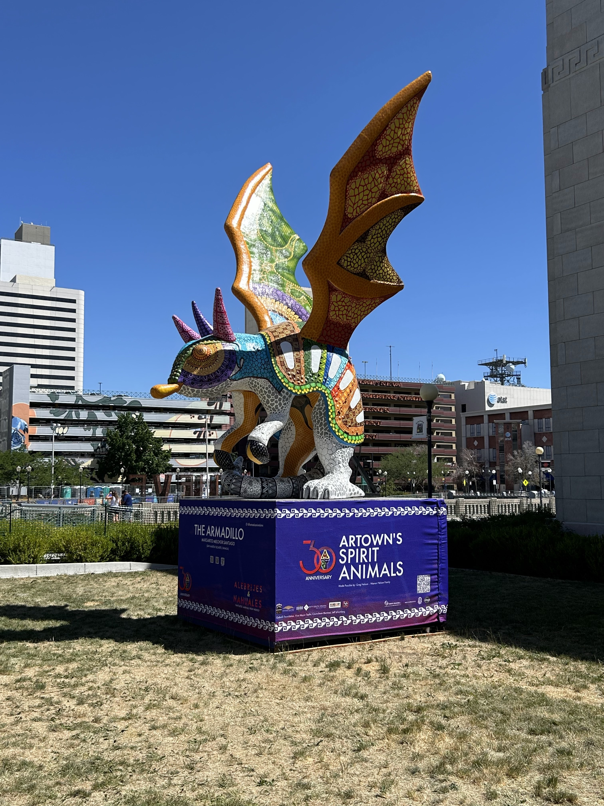
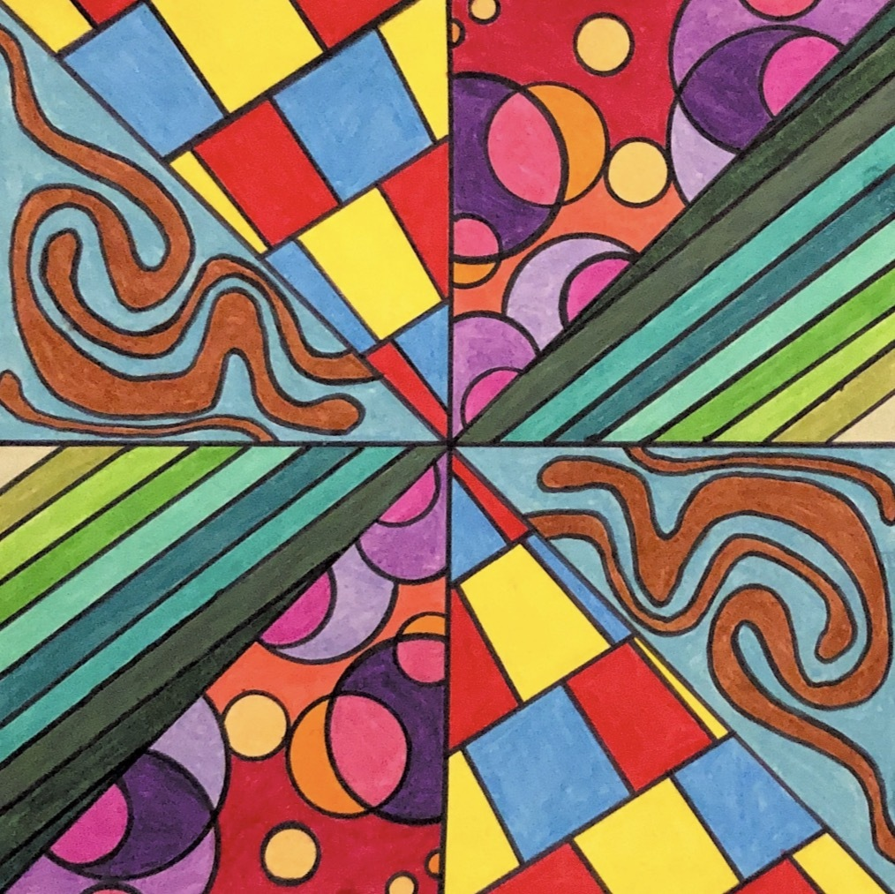
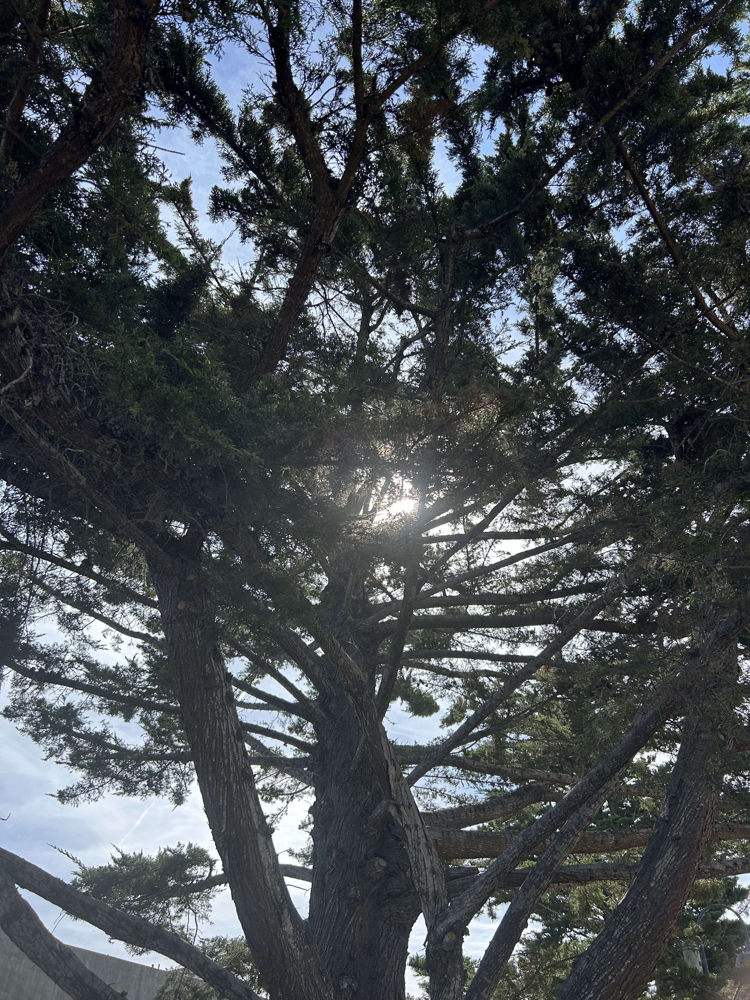
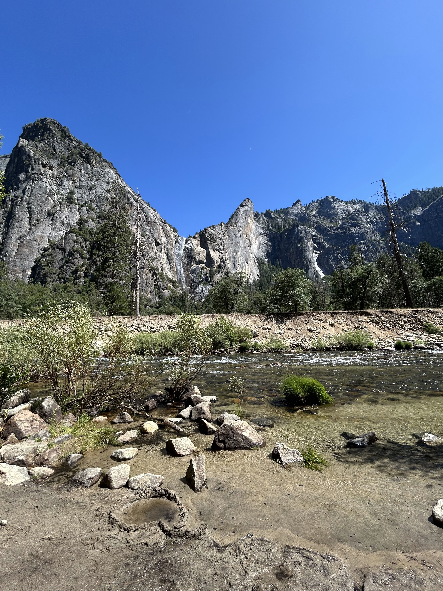
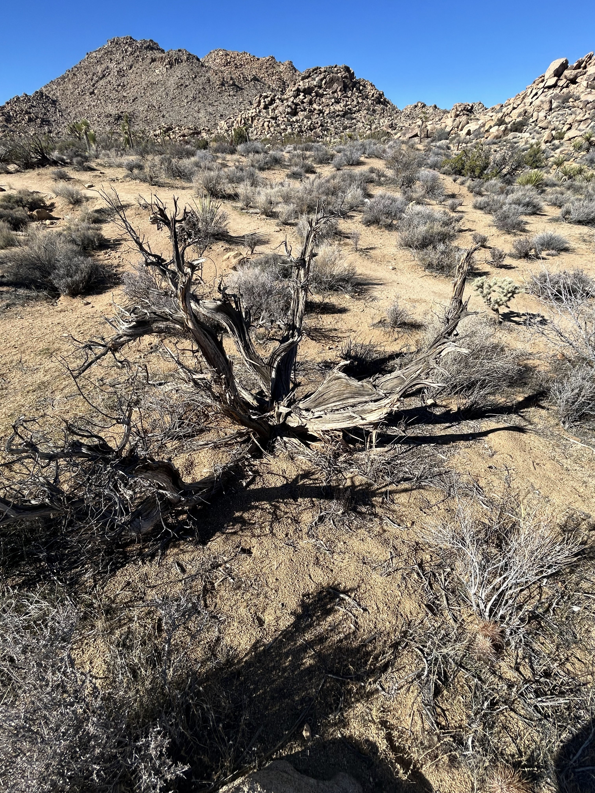
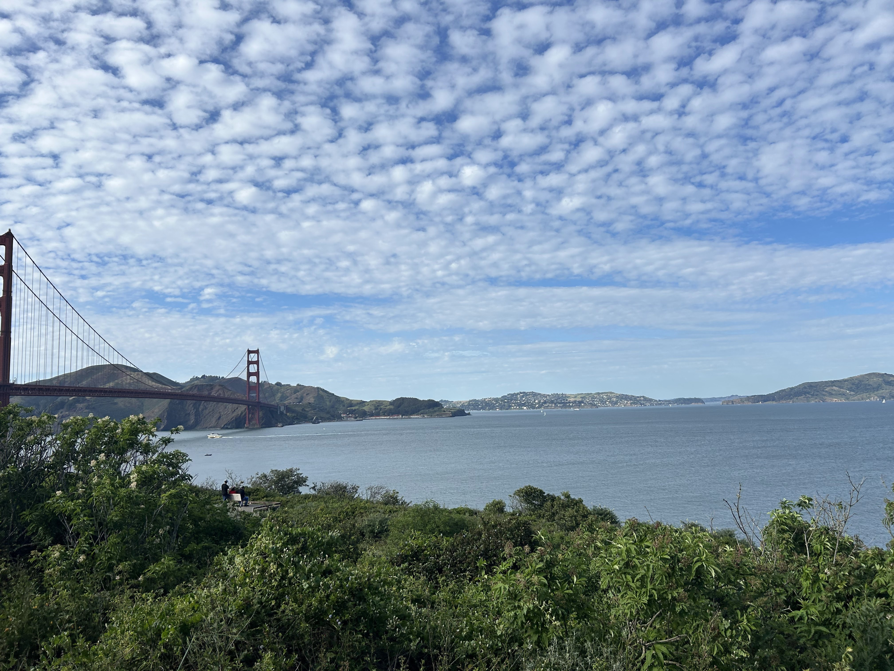
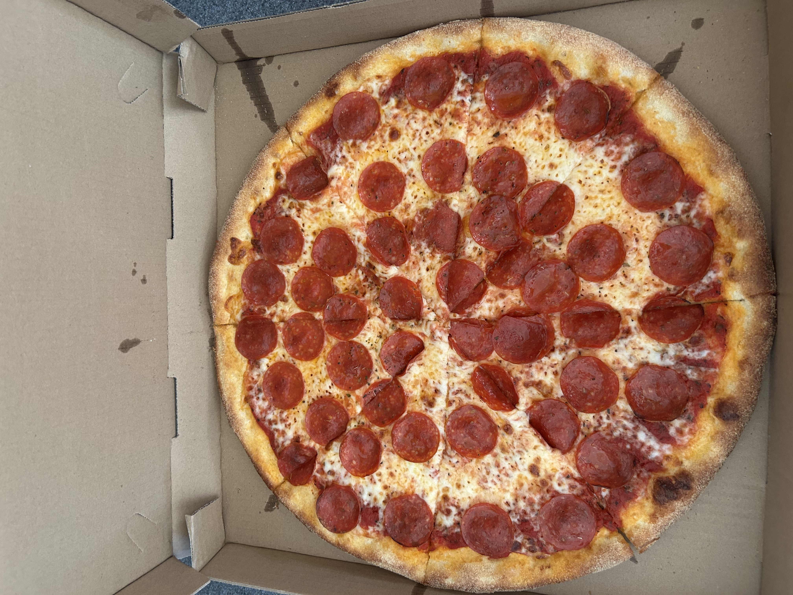
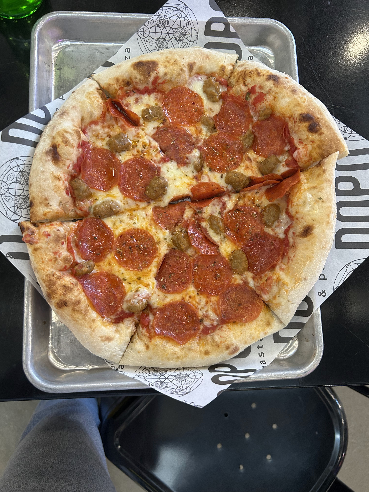
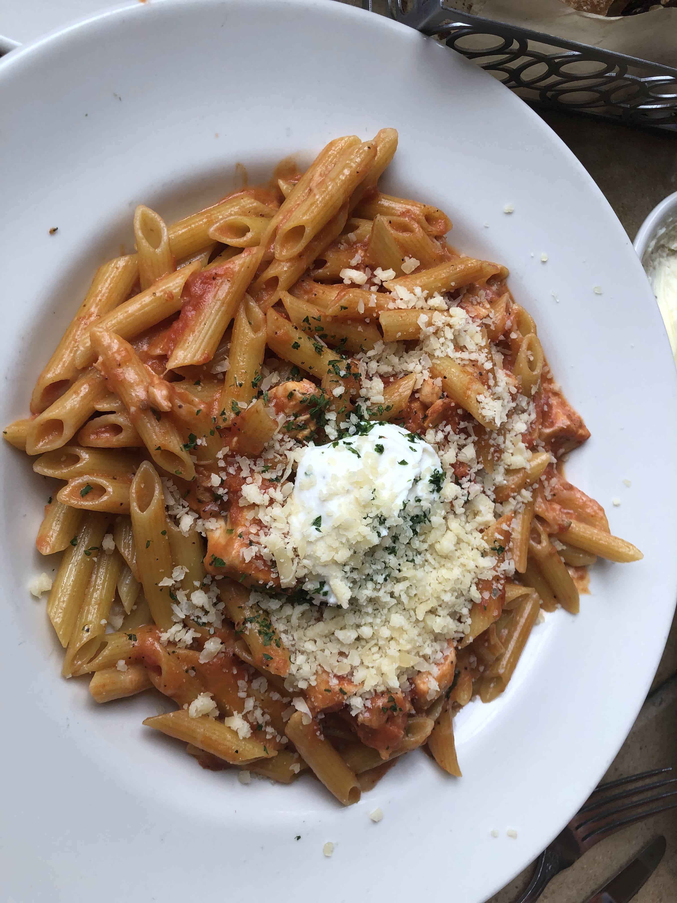
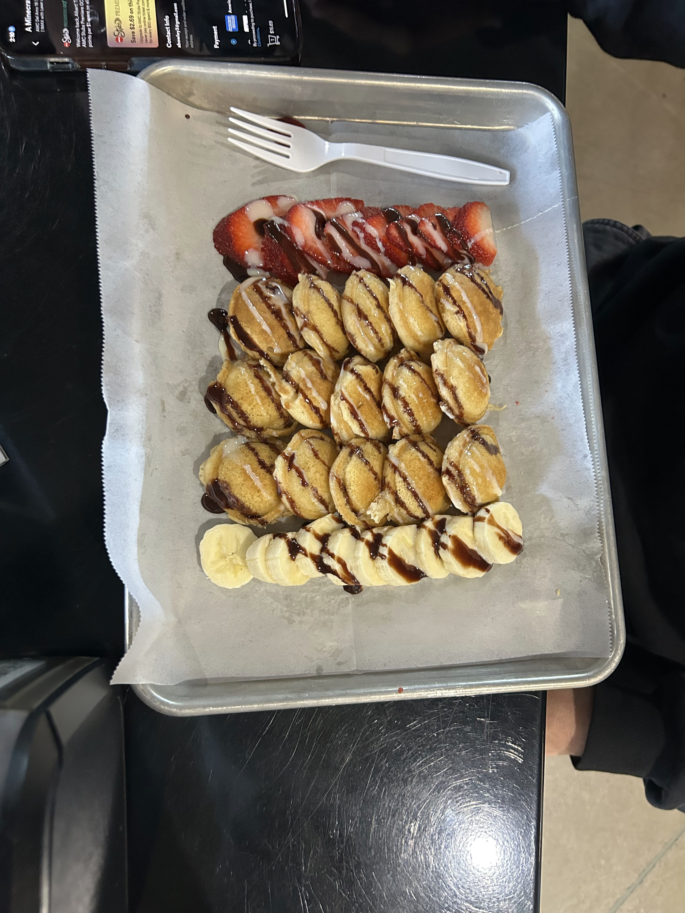